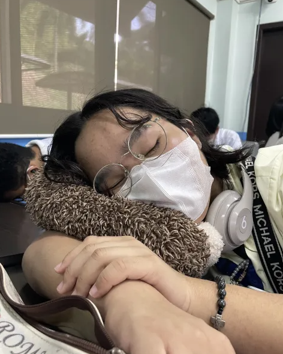
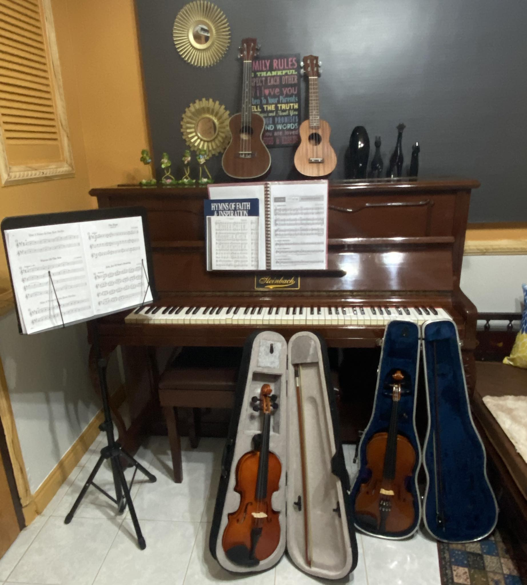
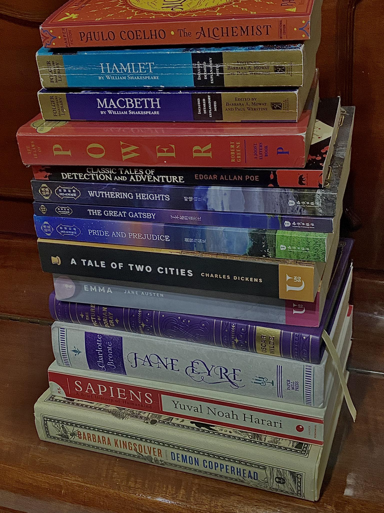
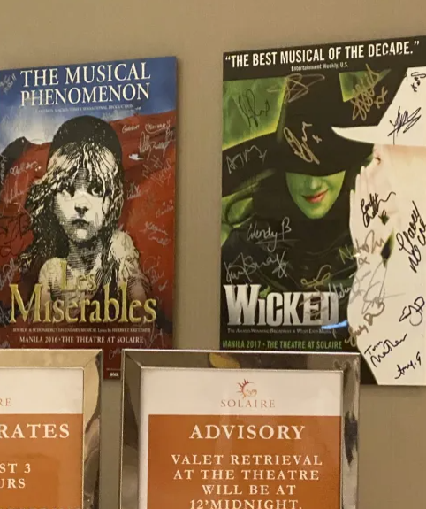

Not Yet Working
Not Yet Working  School of The Holy Child, Angeles Inc. (Batch 2021)
School of The Holy Child, Angeles Inc. (Batch 2021) Philippine Science High School - Central Luzon Campus (Batch 2027)
Philippine Science High School - Central Luzon Campus (Batch 2027) Mabalacat, Pampanga
Mabalacat, Pampanga  July 20, 2009
July 20, 2009  Biology
Biology  Mathematics
Mathematics Social Science
Social Science Photo
Photo  Reel
Reel Live
Live- Post
Hi! In this thread I shall show you all my hobbies and interests! First, of course I love sleeping! (who doesn't?)
 Like
Like Comment
Comment Share
Share
Music has been a huge part of my life. I started voice and piano lessons at seven years old, but I had to stop due to school and only had the chance to go back to it around 2018-2019. Then and there, I started learning all you see in the picture (including the acoustic and electric guitar that didn't fit in the frame.) Although I've been inactive in my journey in music for the past two years because of PISAY's demanding curriculum, I still try to play my instruments whenever I had the chance, (particularly violin, as it is the instrument I mainly focus on at present).
- Like
- Comment
- Share
I love reading books :D They are my main form of leisure, especially on weekends and school breaks.
- Like
- Comment
- Share
Musicals & theatre are my ultimate guilty pleasure! My top three musicals are (1) Les Miserables, (2) Hamilton, and (3) Hamilton.
- Like
- Comment
- Share


 Fitzwilliam Darcy Esquire
Fitzwilliam Darcy Esquire  Edward Fairfax Rochester
Edward Fairfax Rochester  Flynn Rider
Flynn Rider Hiccup Horrendous Haddock III
Hiccup Horrendous Haddock III